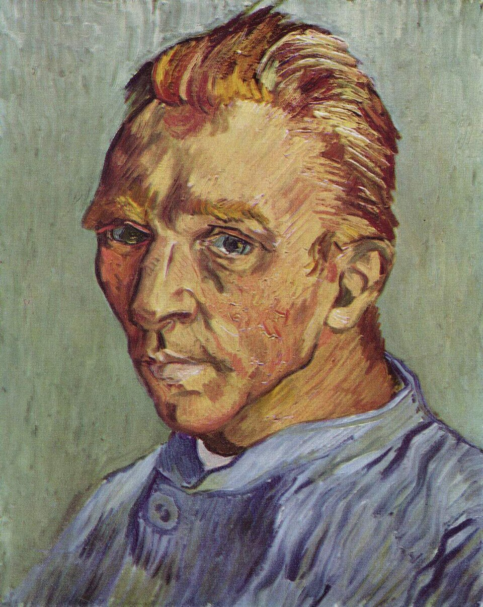

Шесть периодов жизни Винсента Ван Гога — от шахтёрского посёлка Нюэнена до последних полей Овера. 36 картин, написанных за десять лет. Реальные письма к брату Тео, которые Ван Гог писал на протяжении всей своей жизни. Каждое письмо — это шаг. От неуверенности к цвету. От тьмы к свету. Пройдите путь человека, который стал художником вопреки всему — вопреки нищете, непониманию, одиночеству. И убедитесь: искусство — это не то, что ты видишь. Это то, что ты заставляешь других увидеть.